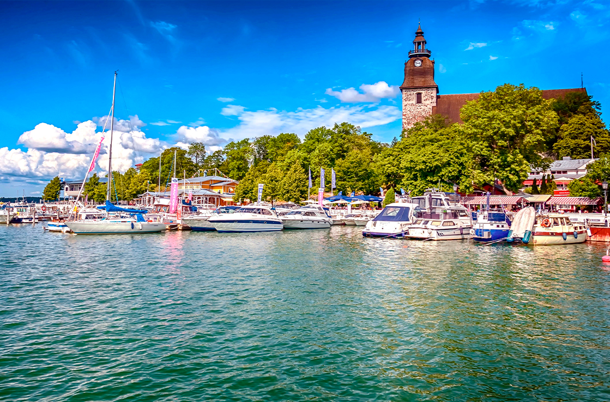
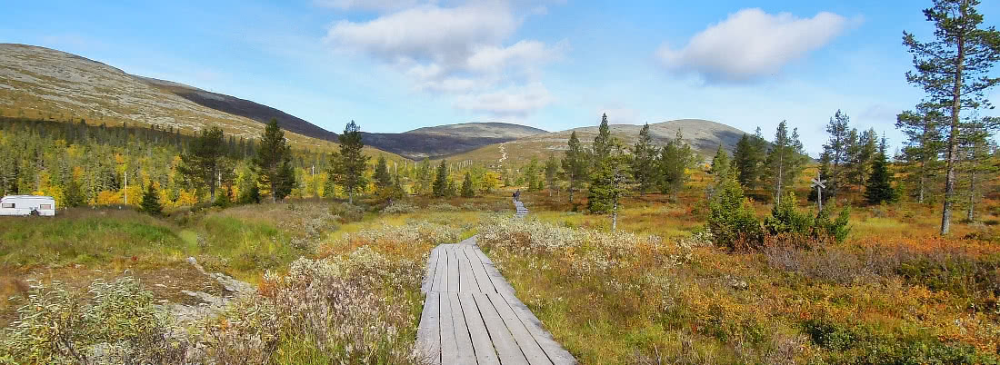

Tutustu Suomen upeisiin maisemiin!

Järvi Suomen upeat maisemat
Katso reittiehdotukset
Suomen mielenkiintoiset kohteet
Tutustu kohteisiin
Lapin mahtavat tunturit
Katso vinkitTervetuloa!
Tutustu Suomen upeisiin kohteisiin helposti ja ekologisesti - ilman omaa autoa.
Tällä sivustolla jaamme vinkkejä ja reittiehdotuksia kotimaan matkailuun ilman omaa autoa. Junat, bussit ja lautat vievät sinut helposti upeisiin luontokohteisiin ja mielenkiintoisiin kaupunkeihin. Ekologinen ja huoleton tapa matkustaa Suomessa!